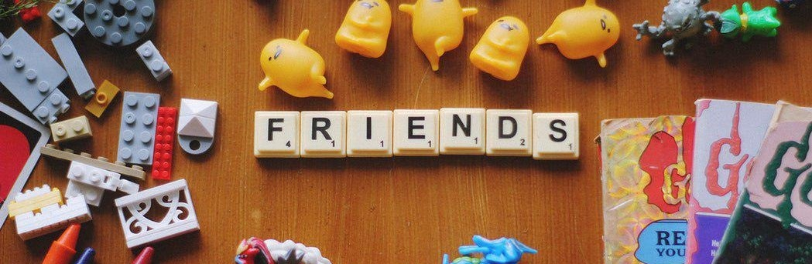

У нас появились настольные игры для детей и взрослых!
История настольных игр насчитывает уже несколько тысячелетий. На берегах Нила во время строительства пирамид, или в доколумбовую эпоху в Америке игры занимали важную часть человеческого времяпрепровождения. Они развлекали, но они и развивали. Играя, человек, сам того не ведая, познавал логику, учился просчитывать события наперед, осмысливал новые понятия, пробовал применять приемы тактики и создавать собственную стратегию. Уже в начале становления человечества игры, создаваемые в разных уголках нашей планеты, отличались друг от друга. На их создании сказывались обычаи, условия быта, религиозные верования и культы. Но шло время. Различные культуры соприкасались, изменялись под воздействием друг друга. Игры одного народа успешно покоряли другой, перемешивались и видоизменялись. К началу ХХI века человечество подошло с огромным количеством различных видов настольных игр.
Азарт и страсть к игре не зависят от социального строя, общественного положения, войны или мира, времени суток или времен года… Они существуют всегда. С самого рождения ребенок познает мир через игру. В детстве он играет с камушками, а через время его игровой доской может стать весь мир.
Прежде чем появиться в современном мире узнаваемыми и популярными образами, древние настольные игры прошли длительный и трудный путь развития. У них были свои взлеты и падения, яркий расцвет популярности и тихий закат забвения. Многие настольные игры канули в лету, и только найденные археологами описания и фрагменты деталей могут немного приоткрыть покров загадочности над тем, что привлекало наших пращуров во времена глубокой древности.
Предлагаем в нашем кафе поиграть в наиболее популярные настольные игры - Монополия, Мафия, Дженга, Уно, Ётта и другие. Большой выбор настольных игр для детей и взрослых!